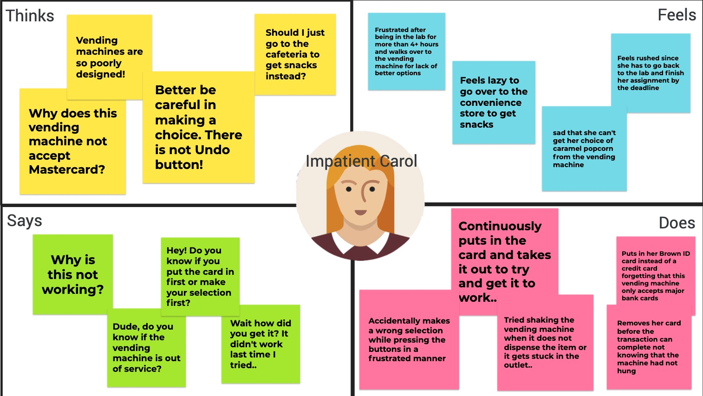
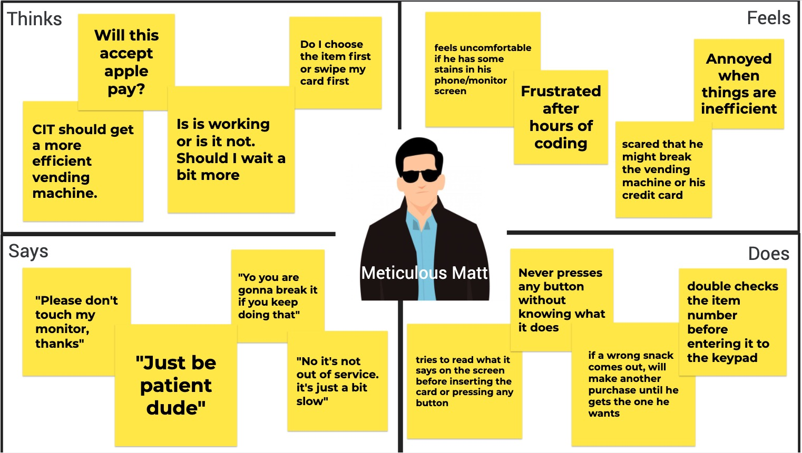
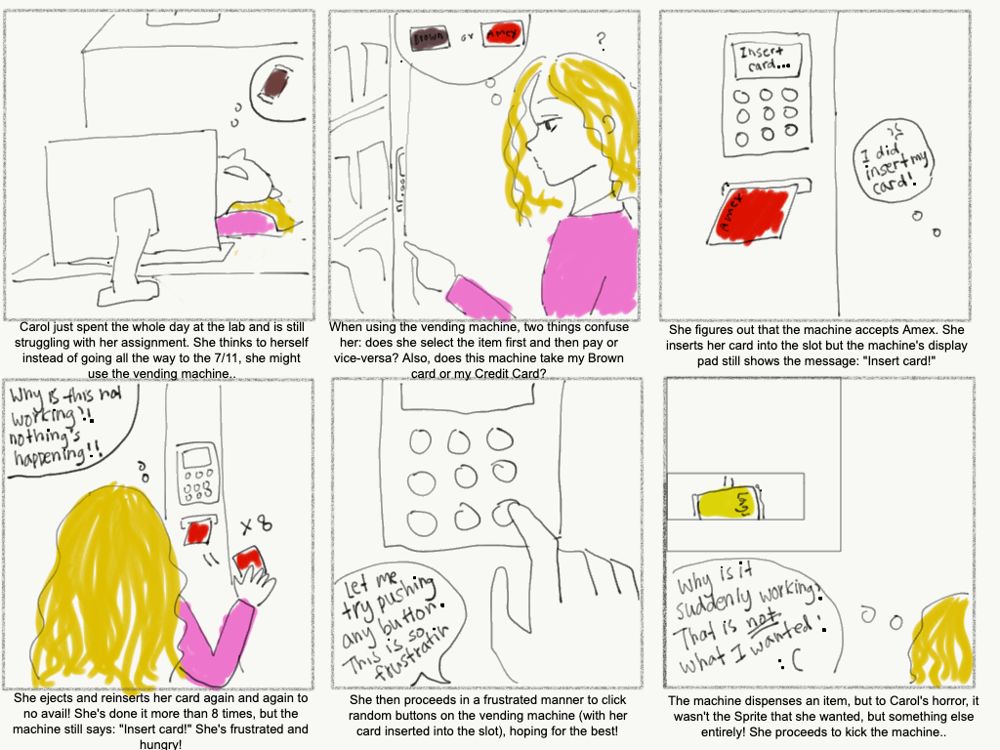

Vending Machine: How efficient is it?
Overview
A vending machine is an interface that users always seem to struggle with from time to time.
On the side, I have a sketch of a vending machine with its basic components.
Brief Description:
The vending machine has a item input area and a card swipe area. Ideally, one just needs to input the item
number
and pay for it. However, Common troubles
include not getting the payment to work, selecting the wrong item and not knowing how to cancel, and the worst
of
all the machine not being able to dispense the correct item.
To find out how effective vending machines are, I asked 5 users the following questions:
- How often do you use vending machines?
- What payment option do you use the most for a vending machine?
- How streamlined would you say the process from
choosing an item to having it in your hand is?
- How often have you selected the wrong item to dispense from the vending machine, and
paid twice to receive the right item(s)?
- When using the vending machine, do you prefer to have vending machines use the swipe
option for your card or
the insert option?
- How intuitive do you think the interface is? Do you think a child or someone with a
disability would be able
to use this interface?
General Observations
- Some users generally had a hard time identifying what
the general flow of purchasing an item from a vending machine should be. Since some vending machines require
the user to first pre-select the item, and then insert the cash/card for payment, while others first require
you to insert the card, and afterwards select the item you wish to purchase, it was quite confusing.
- Another important observation was that most vending
machines do not have a “Payment processing.. Please Wait”. As a result, a lot of users feel that the vending
machine may be having cellular connection issues and so they remove the card before the payment can be
completed.
- In the case of this experiment, if the vending machine was
located in an area such as a campus area, users were confused as to what payment mediums were acceptable.
Some institutions require the user to use their institution card while some others require you to use one’s
own credit card / debit card.
- While selecting an item to dispense from the vending
machine, if the user selected the wrong item, a lot of the times the user would panic, try to immediately
remove their card (which in some cases is locked by the vending machine much like an ATM), and in a frenzy,
click a lot of buttons in hopes to cancel the transaction.
- A lot of users struggle to find the right amount of
pressure required to register an input with the vending machine. While some users would use the interface
with a light amount of pressure much like a mobile screen touch interface, others would press the buttons
like that of a New York subway system ticket dispenser.
Question Responses
-
(1) How often do you use vending machines?
Most users used the vending machines about once a month. However, users also made it aware that if they were
visiting a workplace or location that was out of their comfort zone, they would turn to the vending machines
for known snacks, rather than a place like a cafeteria.
-
(2) What payment option do you use the most for a vending machine?
A vast majority of the users used the card option. However, some of the users (coming from a less developed
region, and not living primarily in the United States), used cash quite a bit.
-
(3) How streamlined would you say the process from
choosing an item to having it in your hand is?
This was completely dependent on the user. A lot of the users interviewed for this project had used vending
machines quite a bit, and so responded with either the “super fast” or the “relatively fast options”. On the
other hand, those users who infrequently used vending machines, or those from lesser developed countries,
mostly responded with the “fast some of the time and slow otherwise” or the “I can never get it to work”
option.
-
(4) How often have you selected the wrong item to dispense from the vending machine, and
paid twice to receive the right item(s)?
The users who were quite comfortable with using the machine had prior knowledge that
vending machines do not come built-in with an “Undo” button. As a result, these users were much more careful
before making their choice, and more
often than not double-checking to see if they in fact had the right item number. On the other hand, less
experienced users, gave less priority to making the actual choice and experienced more number of wrong
dispenses. In most cases if a mitskae was made, a second purchase was initiated.
-
(5) When using the vending machine, do you prefer to have vending machines use the swipe
option for your card or
the insert option?
Most users preferred having the card option as this would save them the hassle of collecting change
afterwards.
-
(6) How intuitive do you think the interface is? Do you think a child or someone with a
disability would be able
to use this interface?
Users reported that most vending machines are not very accessible. The lack of instructions on a lot of
machines, and the general assumption by vending machine manufacturers that most users would already know how
to use a vending machine resulted in the interface being less user friendly than one should expect.
Personas

Impatient Carol
Description:
The first persona I come up with is that of an impatient and impulsive person. I named her Carol. This sort of
person only uses the vending machine for the lack of better options, and is too lazy to go to a nearby
convenience store for snacks.
Interface problem:
The problems that this sort of user experiences includes pressing a number of buttons in a hurried manner and
making a mistake in their selection, removes their card before the transaction is complete, and mistakes what
card she can use in the machine.
Representation:
A lot of users are like Carol in the sense that they only go to the vending machine when they do not find any
other better options.
When using a vending machine, a lot of users like Carol tend to be quite impatient and rush the whole process
of vending something from the machine.

Meticulous Matt
Description:
The second persona that I came up with is Meticulous Matt. Since the CIT vending machine is exclusively used
by CS students, Meticulous Matt embodies some of the standard characteristics of tech-savvy, attentive
students who can spot little bugs in 1000+ lines of code.
Interface problem:
Matt is annoyed by the lack of directions and explanation (such as loading…. ) of the vending machine. He is
also frustrated that the vending machine only accepts a certain kind of card/payment.
Representation:
Many users are just like Matt, and when choosing an item to dispense from the machine are really quite careful
in making their pick.
They are generally quite annoyed by the lack of directions outlined on some vending machines.
Storyboard
When Impatient Carol has been spending the whole day at the lab, the vending machine adds
to her frustration!
